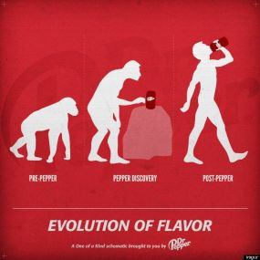
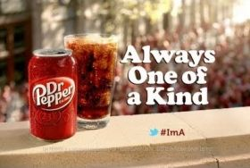

About Dr. Pepper

In 1885, in Waco, Texas, a young pharmacist called Charles Alderton invented the soft drink "Dr Pepper".
Alderton worked at a place called Morrison's Old Corner Drug Store and carbonated drinks were served at the soda fountain. Alderton invented his own recipes for soft drinks and found one of his drinks was becoming very popular.
Morrison, owner of the drug store is credited with naming the drink "Dr Pepper" after a friend of his, Dr. Charles Pepper.
As demand grew Alderton and Morrison had trouble manufacturing enough "Dr Pepper" for their customers. Then in stepped, Robert S. Lazenby, Lazenby owned The Circle "A" Ginger Ale Company in Waco and was impressed with "Dr Pepper".
Alderton did not want to pursue the business and manufacturing end of soft drinks and agreed that Morrison and Lazenby should take over and become partners.

In 1904, the company introduced Dr Pepper to 20 million people attending the 1904, World's Fair Exposition, in St. Louis. That same world's fair introduced hamburger and hot dog buns and ice cream cones to the public.
The Dr Pepper Company is the oldest major manufacturer of soft drink concentrates and syrups in the United States.